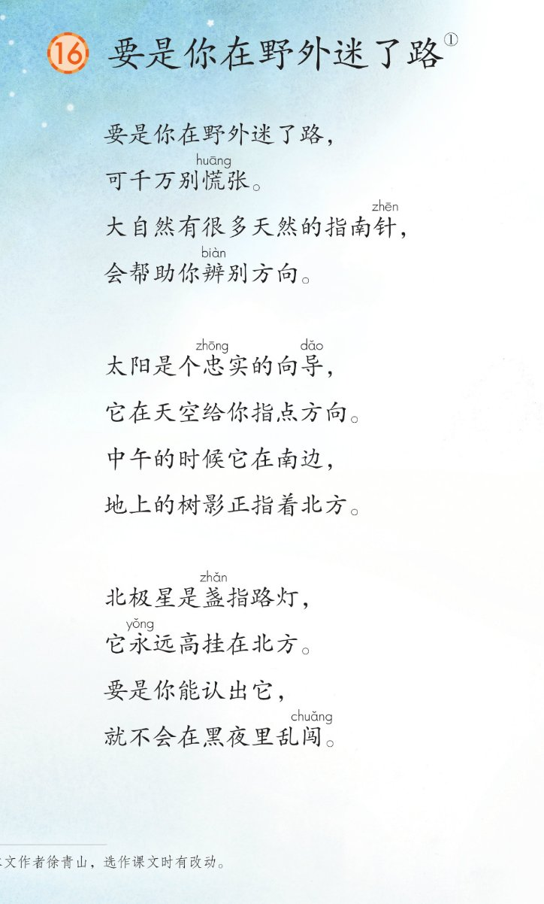
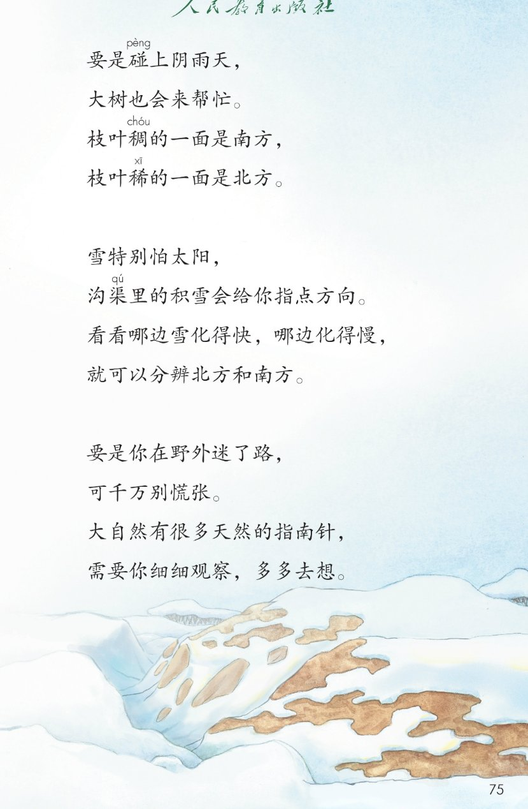
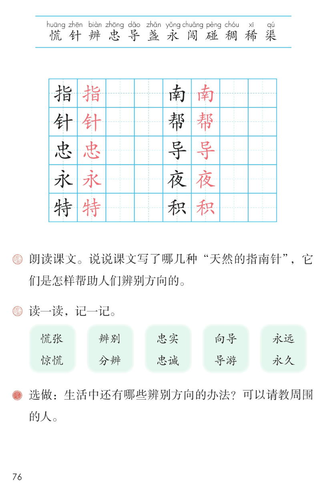

×
🔊 手机听不到声音怎么办？
① 先把手机
媒体音量调大 ，确认没开静音、没连蓝牙耳机；在微信里打开的，点右上角「⋯ → 用浏览器打开」。
② 还是没声音？到应用商店免费下载
Microsoft Edge 浏览器 （它自带朗读发声），用它打开本页面就能出声。
③ 换了 Edge 仍然没声音，说明这部手机的
硬件/系统不支持 网页朗读（多为老旧机型）；近几年买的新手机一般都能正常播放。
→ 打开声音自检
🧭 第 16 课《要是你在野外迷了路》· 有声图文带读
统编版语文 · 第六单元·阅读 · 课本 第 74~76 页 · 作者：徐青山
课文 6 节 · 共 24 行
会认字 12
会写字 10
听写词 10
近义词 5 组
深入理解 8 题
本课本领 朗读·观察·辨别方向
🎧 五步学（可随时点任意一行、一个字、一个词单独听）： ① 听读课文 ——儿童诗六节，一小节一小节读，读到哪一行哪一行发光；开「跟读」后读完一行留时间让你自己读。② 学字词 ——12 个会认字、10 个会写字（含书写提示），点一个读一个。③ 词语·听写·造句 ——先读诗歌词语积累，再听写 10 个词（读两遍→你写→报答案→听示范句），最后听 5 组近义词辨析。④ 深入理解 ——8 道题（认知 / 理解 / 运用 / 拓展），开放题答案不唯一，先想后看。⑤ 分节朗读·想象画面 ——按五步想象四种天然的指南针，再听六位朗读者分节读这首诗。
📚 第六单元·阅读（本课定位）： 第14课《古诗二首》 → 第15课《雷雨》 → 第16课《要是你在野外迷了路》 → 第17课《太空生活趣事多》
点节前的 ①②③④⑤⑥ 听整节
🔁 跟读模式：关
👁 隐藏注音（自测用）
注音只标本课要认的字和课本在课文里标了音的字，读音来自课本第 76 页生字表
🎤 朗读要求（老师标准） 慌 读第一声，针 读第一声，辨 读第四声，忠 读第一声，导 读第三声，盏 读第三声，永 读第三声，闯 读第三声，碰 读第四声，稠 读第二声，稀 读第一声，渠 读第二声；读出诗歌的节奏 ：一小节四行，行与行之间停顿清楚，语气轻快；读出提醒的语气 ：要是你在野外迷了路，可千万别慌张，读得亲切，像朋友在提醒你；读得清楚明白 ：介绍每种指南针的行要读得清楚，让别人听懂怎样辨别方向。
①
要是你在野外迷了路，
可千万别慌huāng 张。
大自然有很多天然的指南针zhēn ，
会帮助你辨biàn 别方向。
②
太阳是个忠zhōng 实的向导dǎo ，
它在天空给你指点方向。
中午的时候它在南边，
地上的树影正指着北方。
③
北极星是盏zhǎn 指路灯，
它永yǒng 远高挂在北方。
要是你能认出它，
就不会在黑夜里乱闯chuǎng 。
④
要是碰pèng 上阴雨天，
大树也会来帮忙。
枝叶稠chóu 的一面是南方，
枝叶稀xī 的一面是北方。
⑤
雪特别怕太阳，
沟渠qú 里的积雪会给你指点方向。
看看哪边雪化得快，哪边化得慢，
就可以分辨biàn 北方和南方。
⑥
要是你在野外迷了路，
可千万别慌huāng 张。
大自然有很多天然的指南针zhēn ，
需要你细细观察，多多去想。
🤔 想一想（点我可跳过）
点一张图，听读整页

第 74 页 · 课文第 1~3 节

第 75 页 · 课文第 4~6 节

第 76 页 · 会认字·会写字·课后题
📖 人教版《语文》二年级下册 · 课本第 74~76 页 · 图片仅供个人学习，版权归人民教育出版社所有
点一个字，听读音、词语和课文里的句子
结构、部首、笔画与书写提示为通用规范，供参考，以教材和老师的指导为准
指
zhǐ
指点 · 指南针
9 画 · 左右（扌）
提手旁写窄，旨字写稳
南
nán
南方 · 南边
9 画 · 上下（十）
十字头写小，里面写紧凑
针
zhēn
指南针 · 时针
7 画 · 左右（钅）
金字旁写窄，十字竖写正
帮
bāng
帮忙 · 帮助
9 画 · 上下（巾）
上宽下窄，巾字托稳
忠
zhōng
忠实 · 忠诚
8 画 · 上下（心）
上中下写紧凑，心字托稳
导
dǎo
向导 · 导游
6 画 · 上下（寸）
巳字写小，寸字托稳
永
yǒng
永远 · 永久
5 画 · 独体
竖钩写正，左右对称
夜
yè
黑夜 · 夜晚
8 画 · 上下（夕）
上面写矮，右边夕字写稳
特
tè
特别 · 特点
10 画 · 左右（牜）
牛字旁写窄，寺字写稳
积
jī
积雪 · 积累
10 画 · 左右（禾）
禾字旁写窄，只字写稳
点一行，听词语和课后题的答案
📖 课后题（课本第 76 页照录） ：① 朗读课文。说说课文写了哪几种“天然的指南针”，它们是怎样帮助人们辨别方向的。 ② 读一读，记一记（慌张—惊慌 / 辨别—分辨 / 忠实—忠诚 / 向导—导游 / 永远—永久）。 ③ 选做：生活中还有哪些辨别方向的办法？可以请教周围的人。
天然 天然 自然
向导 向导 导游
指点 指点 指挥
观察 观察 观看
读两遍 → 你在纸上写 → 报答案 → 听示范句
准备听写 · 共 10 个词
○ ○ ○
点下面的「开始听写」，听到一个词就写一个词。
▶ 开始听写
🔁 再读一遍
👁 看答案
点词听读，点句子听示范句，再自己说一句
1 指点 会写字 · 指
示范句：它在天空给你指点方向。
✏️ 我也能说：谁指点你做什么
2 南方 会写字 · 南
示范句：中午的时候太阳在南边。
✏️ 我也能说：什么在南方
3 时针 会写字 · 针
示范句：钟面上的时针慢慢走。
✏️ 我也能说：什么针怎么样
4 帮忙 会写字 · 帮
示范句：要是碰上阴雨天，大树也会来帮忙。
✏️ 我也能说：谁帮忙做什么
5 忠实 会写字 · 忠
示范句：太阳是个忠实的向导。
✏️ 我也能说：谁是谁忠实的什么
6 向导 会写字 · 导
示范句：太阳是个忠实的向导。
✏️ 我也能说：谁当向导
7 永远 会写字 · 永
示范句：北极星永远高挂在北方。
✏️ 我也能说：谁永远怎样
8 黑夜 会写字 · 夜
示范句：认出北极星，黑夜里也不会乱闯。
✏️ 我也能说：黑夜里怎样
9 特别 会写字 · 特
示范句：雪特别怕太阳。
✏️ 我也能说：什么特别怎样
10 积雪 会写字 · 积
示范句：沟渠里的积雪会给你指点方向。
✏️ 我也能说：哪里有积雪
相同点 / 不一样在哪 / 各造一句
慌张 — 惊慌
相同：都表示心里着急、不冷静 。
不一样：慌张 多写做事时心里乱、手忙脚乱；惊慌 多写被吓到时心里害怕慌乱。课文写可千万别慌张。
慌张：他做事一点不慌张。
辨别 — 分辨
相同：都表示分清楚、看清楚 。
不一样：辨别 侧重看清不同、认出来；分辨 侧重把混在一起的东西分开。课文写辨别方向、分辨北方和南方。
辨别：会帮助你辨别方向。
忠实 — 忠诚
相同：都表示靠得住、不变心 。
不一样：忠实 常说朋友、读者、向导靠得住；忠诚 常写对国家、对人的心不变。课文写太阳是个忠实的向导。
忠实：太阳是个忠实的向导。
向导 — 导游
相同：都表示带路、指引的人 。
不一样：向导 常指在野外、陌生地方带路的人；导游 常指带游客游玩、讲解的人。课文写太阳是个忠实的向导。
向导：太阳是个忠实的向导。
永远 — 永久
相同：都表示时间长、不停息 。
不一样：永远 多用于心里的话和决心；永久 多形容事物长久存在。课文写它永远高挂在北方。
永远：北极星永远高挂在北方。
要是…就… 要是你能认出它，就不会在黑夜里乱闯。
千万（强调） 可千万别慌张
反义词对对碰 南—北 稠—稀 快—慢
细细·多多（叠词） 细细观察 多多去想
标「答案不唯一」的题，说得有道理都对
认知 课文写了哪几种“天然的指南针”？看解析
🤔 想一想
解析：
太阳、北极星、大树、积雪
南边北边、枝叶稠稀、雪化快慢
大自然里处处有指南针
认知 太阳和北极星各在南边还是北边？课文是怎么写的？看解析
🤔 想一想
解析：
中午在南边，树影指北
永远高挂在北方
白天看太阳，晚上看北极星
理解 阴雨天看不到太阳，怎么靠大树辨别方向？看解析
🤔 想一想
解析：
大树的枝叶
是南方，太阳晒得多
是北方，太阳晒得少
理解 沟渠里的积雪怎么帮你分辨北方和南方？看解析
🤔 想一想
解析：
沟渠里的积雪
是北方
是南方，被挡住了阳光
理解 课文开头和结尾两节有什么相同和不同？为什么这样写？看解析
🤔 想一想
解析：
前三行一字不差
最后一行：帮助 → 需要你自己观察去想
首尾呼应，提醒观察思考
运用 用“要是……就……”说一句话。看解析
🤔 想一想
解析：
要是…就…先假设再说结果
天气、休息、出游都可以
🌈 答案不唯一，说得有道理都对
运用 你还知道大自然里哪些天然的指南针？看解析
🤔 想一想
解析：
年轮、蚂蚁窝、大雁都可以
哪一面朝南、往哪边飞
🌈 答案不唯一，说得有道理都对
拓展 生活中还有哪些辨别方向的办法？（课后选做题）看解析
🤔 想一想
解析：
东升西落
路牌、门牌、地图
迷路了请周围的人帮忙
点一步，听这一步
💬 想象支架：先 想迷路了别慌张 → 再 想中午的太阳和树影 → 接着 想夜里的北极星 → 然后 想阴雨天的枝叶稠稀 → 最后 想沟渠里化得快慢的积雪。
点一张卡，听这一节的行
🌈 第1节·朗读者
第1节：要是你在野外迷了路，
💬 开头一节，读得亲切，像朋友提醒
🌈 第2节·朗读者
第2节：太阳是个忠实的向导，
💬 太阳向导，读得清楚明白
🌈 第3节·朗读者
第3节：北极星是盏指路灯，
💬 北极星路灯，读得安静安稳
🌈 第4节·朗读者
第4节：要是碰上阴雨天，
💬 大树帮忙，读得轻快自然
🌈 第5节·朗读者
第5节：雪特别怕太阳，
💬 积雪指路，读得慢一点、想清楚
🌈 第6节·朗读者
第6节：要是你在野外迷了路，
💬 结尾呼应开头，读得亲切又充满期待